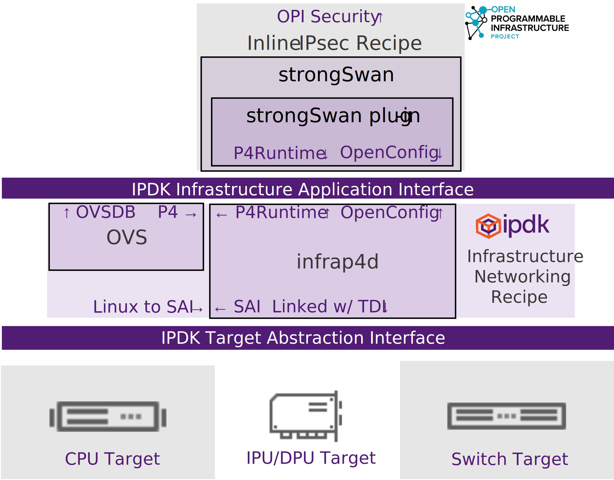
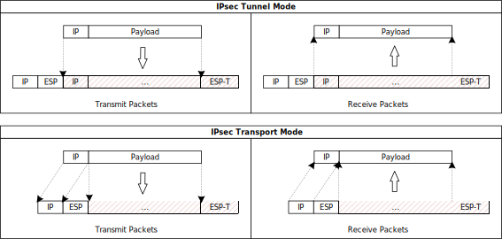
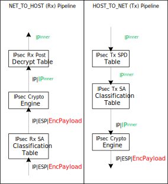

The Inline IPsec Recipe is an application that enables strongSwan to use the Infrastructure Application Inteface, specifically the P4Runtime and OpenConfig gRPCs provided by the Networking Recipe. OpenConfig is used to configure security associations into the infrastructure and P4 is used program how and where the IPsec is inlined.
This recipe integrates the OPI Security API specification to act as a northbound RPC to configure strongSwan remotely.

Infrastructure Application Interface
- strongSwan is used as the IKE control plane. No code changes are needed in strongSwan.
- A strongSwan plug-in is used to convert security association (SA) information into OpenConfig RPC messages to the underlying infrastructure. The P4 program defines which modes are required in the pipeline, as well as where the IPsec is inserted into the broader virtual networking pipeline:
- Tunnel vs. Transport: Determines how the original packet is transformed during encryption/decryption as below: 
- Encrypted Physical Ports: Encrypted tunnels between devices over physical ports. On the wire this wraps additional headers on the outside of the packet in the same way that network virtualization headers such as VXLAN are added/removed.
- Encrypted Virtual Ports: Encrypted virtual ports plugged into compute instances (all traffic going in/out of a given virtual port will be encrypted/decrypted). On the wire this puts the IPsec headers onto the innermost headers belonging to the end user of the compute instance.
The use of cryptography to secure data plane traffic has become common practice. Encrypting and decrypting network traffic using host resources requires that the host must also perform any packet processing of post-decryption receive packets and pre-encryption transmit packets. This can consume significant host compute resources. Offloading packet crypto processing to the data plane removes the burden for cryptographic processing from the host and also allows the infrastructure to be used for pre-encryption and post-decryption packet processing functions.
This recipe looks at inline IPsec processing where the crypto is terminated in the infrastructure, which avoids having specialized drivers or control planes on the compute instance(s). The IPsec control plane (IKE protocol) is offloaded to the infrastructure. The IKE protocol processing runs in software on the infrastructure cores and programs the data plane with offloaded IPsec flows. The data plane programming is separated into two parts, P4Runtime for programming the P4 pipeline and OpenConfig for programming the IPsec crypto configuration. The IPsec crypto configuration includes the IPsec Security Association (SA) table entries (i.e. crypto keys and algorithm selection) and is used for reporting events related to lifetime expiration of SA entries. Rekeying and re-authentication configuration is set using OpenConfig and is translated into lower level dataplane updates at the Target Abstraction Interface.
Target Abstraction Interface
Targets supporting this application must export the following tables through the Table-Driven Interface:
- P4 Tables compiled from the Inline IPsec P4 program.
- Control blocks for Tunnel and Transport modes.
- Parser support for IPsec ESP
- Modify logic to encapsulate on the outer and inner headers of the packet.
- IPsec OpenConfig schema based on the RFC
- Configuration of the type & strength of encryption
- Encryption keys w/ mechanisms to rekey
- Authentication & Re-authentication mechanisms
- Classification
- Access Control Lists
- Designed to stay aligned with the OPI Security API specification
Tunnel Mode
The resulting logical pipelines for IPsec tunnel mode are illustrated below.

NET_TO_HOST (Rx) pipeline processing elements
| Step | Table | Purpose |
|---|---|---|
| 1 | IPsec Rx SA Classification Table | Maps Rx IPsec packets to IPsec SA entries using the packet header fields. Sets packet metadata to specify the SA index and to indicated that IPsec processing is required. |
| 2 | IPsec Crypto Engine | Decrypts and decapsulates IPsec ESP packets using the IPsec SA entry at the SA index specified in the packet metadata. |
| 3 | IPsec Rx Post Decrypt Table | Verifies that the crypto processing of the packet was successful (by checking packet metadata set by the engine). In IPsec tunnel mode: Removes the outer IP header. |
HOST_TO_NET (Tx) pipeline processing elements:
| Step | Table | Purpose |
|---|---|---|
| 1 | IPsec Tx SPD Table | An optional ACL table that identifies Tx traffic that requires IPsec protection. |
| 2 | IPsec Tx SA Classification Table | Maps Tx packets to IPsec SA entries using the packet header fields. and packet metadata. Sets packet metadata to specify the SA index and to indicated that IPsec processing is required. In IPsec tunnel mode: Adds the outer IP header. |
| 3 | IPsec Crypto Engine | Encapsulates and encrypts IPsec ESP packets using the IPsec SA entry at the SA index specified in the packet metadata. |